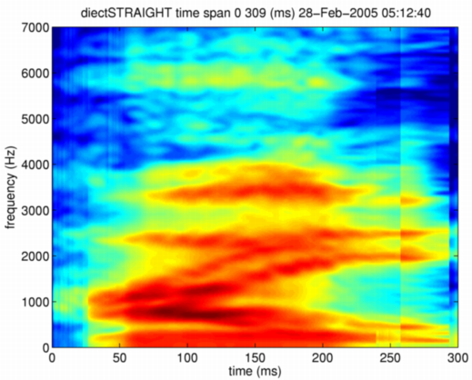
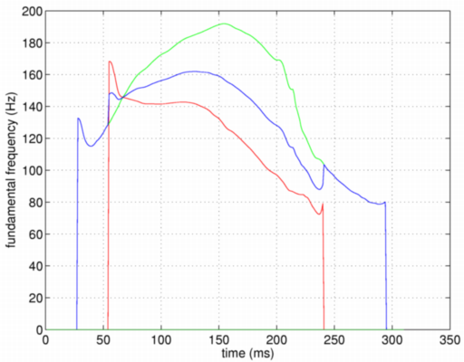
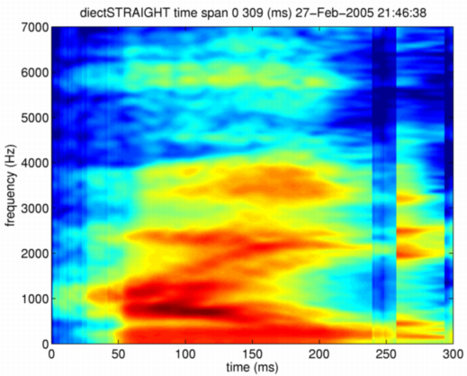

| | | Morphing in STRAIGHT parameter domain without side information | Contents | Index |
The second step is more realistic. Morphing is implemented by interpolation in the STRAIGHT parameter domain. No time alignment is take place in this case. Simple interpolation between corresponding parameters is taken place according to morphing ratio. This morphing is implemented as a function directSTRAIGHTmorphing. The first parameter and the second parameter represents M-objects to be morphed. The third parameter represents the morphing rate that is amount of the second component to be mixed (sum of this rate and the amount of the first component is constrained to be one). The last component defines mixing axis. Currently linear and log are provided.
mObject3 = directSTRAIGHTmorphing(neutralHai,angryHai,0.5,'linear');
Anomalies develop such as doubled formant trajectories and double plosive explosions, because no time and frequency alignment is introduced. The following figure shows direct interpolation in STRAIGHT spectrum domain. The rate is 0.5.

Fundamental frequency is also interpolated on log-frequency axis. Fundamental frequency of voiced counterpart is used as the mixed fundamental frequency when one of example F0s at an instant is classified as unvoiced. The mixed fundamental frequency trajectory is shown below as a solid blue line. Red line and green line represents those of given examples.

The resulted STRAIGHT spectrum does not corresponds to any natural sounds. The F0 trajectory is also unnatural. However, the resynthesized speech sound does not sound awfully unnatural. It is an interesting perceptual result. It may indicate that concept of formant as a resonance of a vocal tract does not directly corresponding to perceptual attribute. It can be likely that formant as a representative statistical value of energy aggregation in the frequency domain is more directly related to our perception. STRAIGHT spectrogram can also be mixed on logarithmic axis. The following command does it.
>> mObject3 = directSTRAIGHTmorphing(neutralHai,angryHai,0.5,'log'); >> syneu = executeSTRAIGHTsynthesisM(mObject3); >> wavwrite(syneu/32768,fs,16,'mixSTRAIGHTlog.wav');
This mixing is spectral multiplication and shapes of low energy region dominates the shape. The following figure shows the result of logarithmic mixing.

| | | Morphing in STRAIGHT parameter domain without side information | Contents | Index |